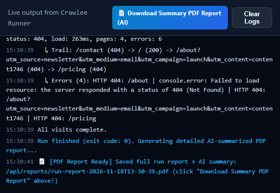
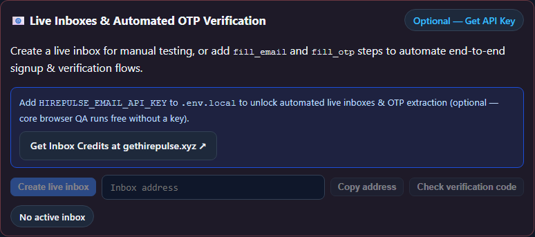
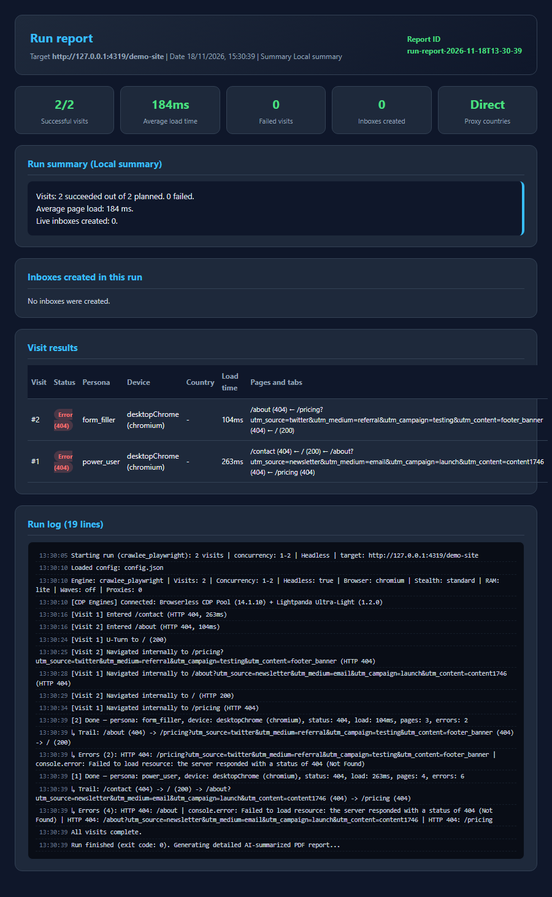

1. Real-time GA4 g/collect hit verification
Headless QA runs often finish with green Playwright checks even when analytics beacons fail due to consent banners or premature tab closes. Traffic Engine listens at the network layer for outgoing google-analytics.com/g/collect payloads and pairs keep-alive timings (attribution.lockerDwellMs, closeSettleMs) with each session outcome.

2. Live email & OTP verification sweeps
src/emailInboxClient.js integrates with HirePulse Live Inboxes (https://gethirepulse.xyz/v1/email/inboxes) to run full signup tests:
fill_emailcreates an isolated inbox for the current visit and types the address.fill_otppolls for the confirmation code or link and submits verification.emailSweepPassesre-checks delayed confirmation emails after the main browser run concludes.

3. Secret redaction & HTML/PDF QA reports
src/redaction.js scrubs passwords, OTP codes, inbox IDs, and proxy credentials before writing logs or exporting run summaries via src/runReportGenerator.js.
